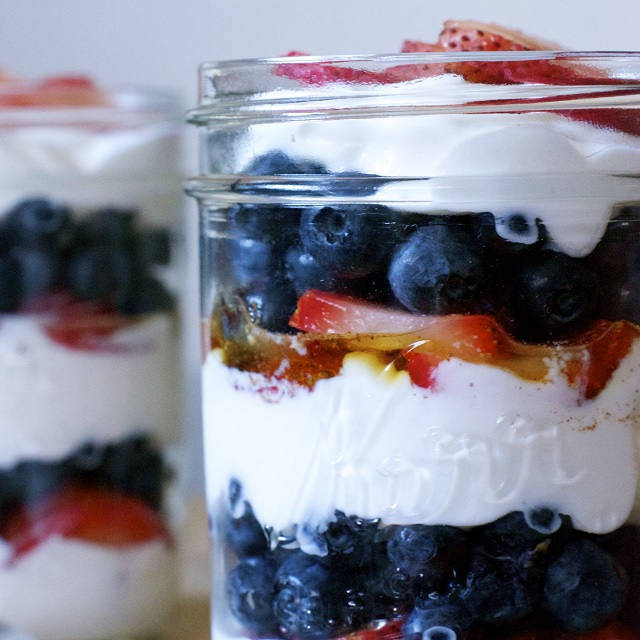

Double Berry Breakfast Parfaits

Information
- TOTAL TIME: 0:10 PREP TIME: 0:10 COOK TIME: 0 SERVINGS: 2
| INGREDIENTS | QUANTITY |
|---|---|
| Greek yogurt | 2 cups |
| Strawberries | 1 ½ cups (sliced) |
| Blueberries | 1 pint |
| OPTIONAL FRUITS | OPTIONAL TOPPINGS |
|---|---|
| Raspberries | Honey |
| Blackberries | Cinnamon |
| Banana | Cocoa powder |
| Oranges | Sprinkles |
| Mangos |
Directions
- In mason jars or bowls, begin layers with ¼ cup of Greek yogurt, followed by a layer of strawberries and then blueberries.
- Repeat layering process until yogurt and berries are gone.
- If desired, add a drizzle of honey and sprinkling of cinnamon to yogurt layer before adding berries.
Notes
- Store any uneaten parfaits covered in fridge for up to two days.